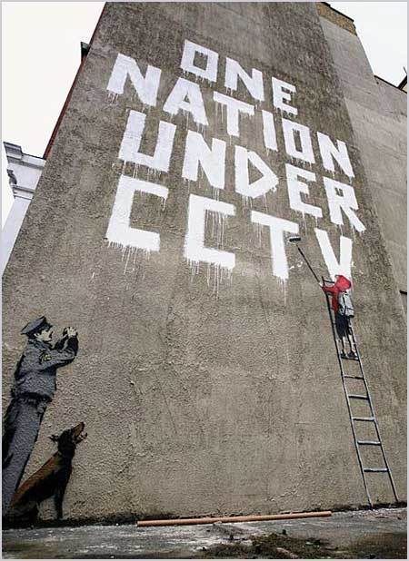

Credit
One Nation Under CCTV was a 2007 mural by graffiti artist Banksy on Newman Street in London. Painted on the wall of a building used by the Royal Mail, it depicts a child in a red hooded top painting the phrase, while being watched by a police officer and a dog. The mural was situated adjacent to a CCTV camera.
2008
Spray Paint
London, UK